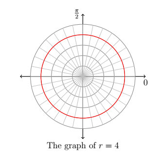
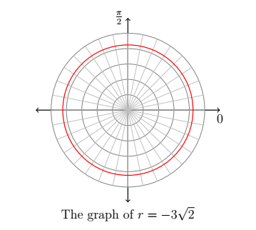
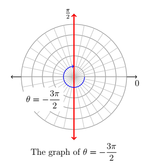

CH 8.5 – Graphs of Polar Equations
In this section, we discuss how to graph equations in polar coordinates on the rectangular coordinate plane. Since any given point in the plane has infinitely many different representations in polar coordinates, our 'Fundamental Graphing Principle' in this section is not as clean as it was for graphs of rectangular equations. We state it below for completeness.
The Fundamental Graphing Principle for Polar Equations
The graph of an equation in polar coordinates is the set of points which satisfy the equation. That is, a point \(P(r,\theta)\) is on the graph of an equation if and only if there is a representation of \(P\), say \(\left(r',\theta'\right)\), such that \(r'\) and \(\theta'\) satisfy the equation.
Our first example focuses on some of the more structurally simple polar equations.
Example
Graph the following polar equations.
- \(r = 4\)
- \(r = -3\sqrt{2}\)
- \(\theta = \dfrac{5\pi}{4}\)
- \(\theta = -\dfrac{3\pi}{2}\)
Solution
In each of these equations, only one of the variables \(r\) and \(\theta\) is present making the other variable free. This makes these graphs easier to visualize than others.
-
In the equation \(r = 4\), \(\theta\) is free. The graph of this equation is, therefore, all points which have a polar coordinate representation \((4,\theta)\), for any choice of \(\theta\). Graphically this translates into tracing out all of the points \(4\) units away from the origin. This is exactly the definition of circle, centered at the origin, with a radius of \(4\).

-
Once again we have \(\theta\) being free in the equation \(r = -3\sqrt{2}\). Plotting all of the points of the form \((-3\sqrt{2}, \theta)\) gives us a circle of radius \(3\sqrt{2}\) centered at the origin.

-
In the equation \(\theta = \frac{5\pi}{4}\), \(r\) is free, so we plot all of the points with polar representation \(\left(r, \frac{5\pi}{4}\right)\). What we find is that we are tracing out the line which contains the terminal side of \(\theta = \frac{5\pi}{4}\) when plotted in standard position.

-
As in the previous example, the variable \(r\) is free in the equation \(\theta = -\frac{3\pi}{2}\). Plotting \(\left(r, -\frac{3\pi}{2}\right)\) for various values of \(r\) shows us that we are tracing out the \(y\)-axis.

Hopefully, our experience in the above examples makes the following result clear.
Graphs of Constant \(r\) and \(\theta\)
Suppose \(a\) and \(\alpha\) are constants, \(a \neq 0\).
- The graph of the polar equation \(r = a\) on the Cartesian plane is a circle centered at the origin of radius \(|a|\).
- The graph of the polar equation \(\theta = \alpha\) on the Cartesian plane is the line containing the terminal side of \(\alpha\) when plotted in standard position.
Suppose we wish to graph \(r = 6\cos(\theta)\). A reasonable way to start is to treat \(\theta\) as the independent variable, \(r\) as the dependent variable, evaluate \(r = f(\theta)\) at some 'friendly' values of \(\theta\) and plot the resulting points. We generate the table below.
| \(\theta\) | \(r = 6\cos(\theta)\) | \((r,\theta)\) |
|---|---|---|
| \(0\) | \(6\) | \((6,0)\) |
| \(\dfrac{\pi}{4}\) | \(3\sqrt{2}\) | \(\left(3\sqrt{2},\, \dfrac{\pi}{4}\right)\) |
| \(\dfrac{\pi}{2}\) | \(0\) | \(\left(0,\, \dfrac{\pi}{2}\right)\) |
| \(\dfrac{3\pi}{4}\) | \(-3\sqrt{2}\) | \(\left(-3\sqrt{2},\, \dfrac{3\pi}{4}\right)\) |
| \(\pi\) | \(-6\) | \((-6,\,\pi)\) |
| \(\dfrac{5\pi}{4}\) | \(-3\sqrt{2}\) | \(\left(-3\sqrt{2},\, \dfrac{5\pi}{4}\right)\) |
| \(\dfrac{3\pi}{2}\) | \(0\) | \(\left(0,\, \dfrac{3\pi}{2}\right)\) |
| \(\dfrac{7\pi}{4}\) | \(3\sqrt{2}\) | \(\left(3\sqrt{2},\, \dfrac{7\pi}{4}\right)\) |
| \(2\pi\) | \(6\) | \((6,\,2\pi)\) |

Despite having nine ordered pairs, we get only four distinct points on the graph. But, we can see from the graph the general shape that it makes, a circle to the right of the y-axis with a diameter of \(6\). When graphing polar equations it is important to have a reference to what the graph will look like to aid us in completing the graphs. But, before we get there let's look at the completed version of this graph.
Polar Graph "Parent Functions"
![Large reference chart of polar graph parent functions divided into three groups. Top row labeled Circles and Lemniscates: four small polar grids showing a circle for r equals a cosine theta (circle shifted right of origin), a circle for r equals a sine theta (circle shifted above origin), a figure-eight lemniscate for r squared equals a squared sine 2 theta (lobes along a diagonal axis), and a figure-eight lemniscate for r squared equals a squared cosine 2 theta (lobes along the horizontal axis). Middle row labeled Limacons: four small polar grids showing a limacon with inner loop for a over b less than 1, a cardioid for a over b equals 1, a dimpled limacon for 1 less than a over b less than 2, and a convex limacon for a over b greater than or equal to 2. Each is labeled with its general equation r equals a plus or minus b cosine theta or r equals a plus or minus b sine theta. Bottom row labeled Rose Curves with note that n petals form when n is odd and 2n petals when n is even with n at least 2: four polar grids showing a 3-petal rose for r equals a cosine 3 theta, an 8-petal rose for r equals a cosine 4 theta, a 3-petal rose for r equals a sine 3 theta, and an 8-petal rose for r equals a sine 4 theta. Footer note: For all except Limacons, a is the length of the diameter of the circle or petal.](images/8_5_6.png)
Example
Graph the following polar equations.
- \(r = 4 - 2\sin(\theta)\)
- \(r = 2 + 4\cos(\theta)\)
- \(r = 5\sin(2\theta)\)
- \(r^2 = 16\cos(2\theta)\)
Solution
-
Looking at the form of \(r = 4 - 2\sin(\theta)\) you need to decide which family this fits into. Since this is of the form \(r = a - b\sin(\theta)\), that tells me it is a Limaçon and since \(\frac{a}{b} = \frac{4}{2} = 2 \geq 2\) that tells us it is a Convex Limaçon. To get an idea of placement of points we need to find our common points through the interval \([0,2\pi)\) to help us graph the equation more accurately.
\(\theta\) \(r = 4 - 2\sin(\theta)\) \((r,\theta)\) \(0\) \(4\) \((4,0)\) \(\dfrac{\pi}{6}\) \(3\) \(\left(3,\, \dfrac{\pi}{6}\right)\) \(\dfrac{\pi}{2}\) \(2\) \(\left(2,\, \dfrac{\pi}{2}\right)\) \(\dfrac{5\pi}{6}\) \(3\) \(\left(3,\, \dfrac{5\pi}{6}\right)\) \(\pi\) \(4\) \((4,\,\pi)\) \(\dfrac{7\pi}{6}\) \(5\) \(\left(5,\, \dfrac{7\pi}{6}\right)\) \(\dfrac{3\pi}{2}\) \(6\) \(\left(6,\, \dfrac{3\pi}{2}\right)\) \(\dfrac{11\pi}{6}\) \(5\) \(\left(5,\, \dfrac{11\pi}{6}\right)\) 
-
For the next example we take the same approach — \(r = 2 + 4\cos(\theta)\) is of the form \(r = a + b\cos(\theta)\) which suggests that it is a Limaçon again, and \(\frac{a}{b} = \frac{2}{4} = \frac{1}{2} < 1\) telling us that it is a Limaçon with an inner loop. Once again we find some common points using our unit circle to graph.
\(\theta\) \(r = 2 + 4\cos(\theta)\) \((r,\theta)\) \(0\) \(6\) \((6,0)\) \(\dfrac{\pi}{3}\) \(4\) \(\left(4,\, \dfrac{\pi}{3}\right)\) \(\dfrac{\pi}{2}\) \(2\) \(\left(2,\, \dfrac{\pi}{2}\right)\) \(\dfrac{2\pi}{3}\) \(0\) \(\left(0,\, \dfrac{2\pi}{3}\right)\) \(\pi\) \(-2\) \((-2,\,\pi)\) \(\dfrac{4\pi}{3}\) \(-2\) \(\left(-2,\, \dfrac{4\pi}{3}\right)\) \(\dfrac{3\pi}{2}\) \(2\) \(\left(2,\, \dfrac{3\pi}{2}\right)\) \(\dfrac{5\pi}{3}\) \(4\) \(\left(4,\, \dfrac{5\pi}{3}\right)\) 
-
Once again identify the general shape this function will take — \(r = 5\sin(2\theta)\) is of the form \(r = a\sin(n\theta)\) which suggests that it is a rose curve with 4 petals since \(n\) is even. Also it is important to note that the length across one petal will be 4 units. Once again find some of our common points using our unit circle and plot the graph.
\(\theta\) \(r = 5\sin(2\theta)\) \((r,\theta)\) \(0\) \(0\) \((0,0)\) \(\dfrac{\pi}{12}\) \(\dfrac{5}{2}\) \(\left(\dfrac{5}{2},\, \dfrac{\pi}{12}\right)\) \(\dfrac{\pi}{4}\) \(5\) \(\left(5,\, \dfrac{\pi}{4}\right)\) \(\dfrac{5\pi}{12}\) \(\dfrac{5}{2}\) \(\left(\dfrac{5}{2},\, \dfrac{5\pi}{12}\right)\) \(\dfrac{\pi}{2}\) \(0\) \(\left(0,\, \dfrac{\pi}{2}\right)\) \(\dfrac{7\pi}{12}\) \(-\dfrac{5}{2}\) \(\left(-\dfrac{5}{2},\, \dfrac{7\pi}{12}\right)\) \(\dfrac{3\pi}{4}\) \(-5\) \(\left(-5,\, \dfrac{3\pi}{4}\right)\) \(\dfrac{11\pi}{12}\) \(-\dfrac{5}{2}\) \(\left(-\dfrac{5}{2},\, \dfrac{11\pi}{12}\right)\) It may be important to note that this really only gives us half the circle because of the double angle, which means you'd need to keep going around the second half of the circle to get the other points.

-
Our last example is an example of a Lemniscate with a petal length of \(\sqrt{16} = 4\). If we used our unit circle to find and plot our points we'd end up with the graph below.

As with graphing any type of function from time to time it may be necessary to find more points than just the select few we found in each of these cases. There is no rule that says you can only use \(x\) amount of points to find the graph. Find and use as many points as you need.
Exercises
Exercises to be added at a later date.